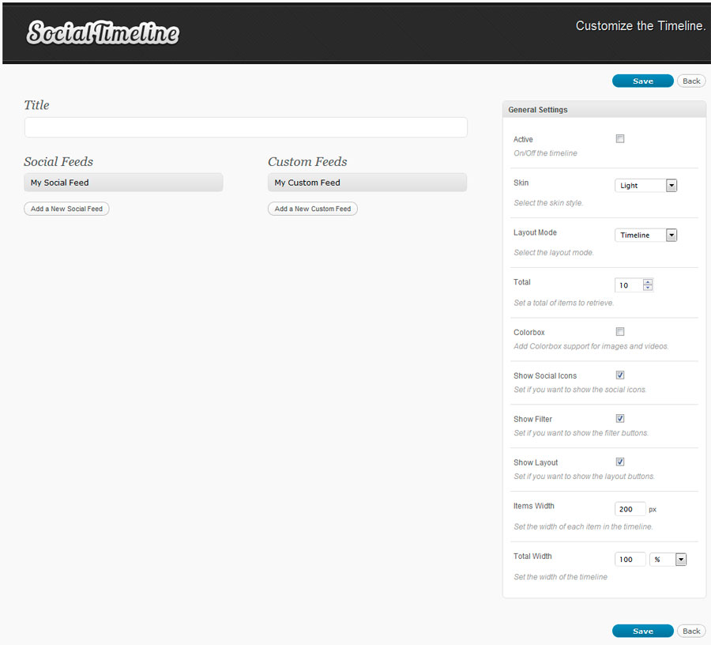
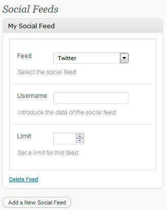
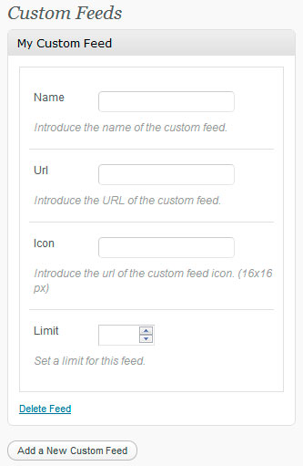
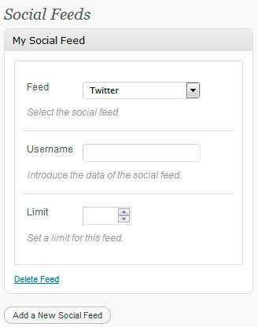

Wordpress Social Timeline
Premium Plugin
- Created: 17/07/2012
- latest Update: 17/07/2012
- By: Diego Pereyra
- Email: info@dpereyra.com
The DP Social Timeline plugin lets you retrieve status/posts/videos/images from different social networks in a timeline format from the newest to the oldest.
Introduction
Thank you for purchasing my item. If you have any questions that are beyond the scope of this help file,
please feel free to email via my user page contact form here. Thanks so much!
Features
- Get status/posts/videos/ images from differents accounts in the same social network
- Twitter, Facebook Page, Youtube, Delicious, Flickr, Dribbble, Digg, Pinterest, Tumblr, Instagram
- Retrieve Youtube videos using search keywords.
- Retrieve tweets using a hashtag.
- Different display styles.
- Limit the number of Feeds to retrieve.
- Add multiple custom feeds.
- Show/Hide Social Icons.
- Use as a Widget.
- Social Filter Support.
- Cross Browser Support.
- Simple to Customize.
- Full Documentation.
Included Folders
The following files and folders are included in the package:
- Documentation Folder contains this help file.
- dpSocialTimeline Folder contains the Wordpress plugin.
Usage
- 1 - Copy the "dpSocialTimeline" folder into your wordpress "wp-content/plugins/" folder using
your favorite FTP program.
- 2 - Go to your WordPress "Manage Plugins" page, find the "DP Social Timeline" in your plugins list and click on activate.
That's it for the installation!
Once the plugin has been activated you will notice a new menu on the side called "Social Timeline" enabling you to customize it.
When you have finished creating and customizing your timeline, use this shortcode [dpSocialTimeline id=x]
into any post or page and the timeline will be integrated. Note that the x is the ID number of the
timeline.
Timelines
Create the timelines and manage the settings.

Social Feeds
Click the Add a New Social Feed button and fill the form.

Custom Feeds
Click the Add a New Custom Feed button and fill the form.

Inline Shortcode Options
You can use paramters in the shortcode to customizate the timeline without adding them from the administration.
[dpSocialTimeline skin="light" total="20" items="{'name':'twitter','data':'envato','limit':'20'},{'name':'youtube','data':'youtube','limit':'5'}" ]
Parameters:
- items - Set social RSS feeds. Must be added between { and } and separated by commas. Set the following ptoperties: name, data, limit
- custom - Set custom RSS feeds. Must be added between { and } and separated by commas. Set the following ptoperties: name, url, icon, limit
- layoutMode - Set the Layout Style. (timeline / columns / one_column). Default: "timeline"
- addColorbox - Activate the lightbox feature for images and videos. (1 / 0)
- showSocialIcons - Show/Hide social icons. (1 / 0) Default: 1.
- showFilter - Show/hide the filter buttons. (1 / 0) Default: 1.
- showLayout - Show/hide the layout buttons. (1 / 0) Default: 1.
- itemWidth - Set the width of each column. Default: 200.
- total - Set the total number of items to retrieve. Default: 10.
Changelog
Version 1.7.7
- Added retweet support on twitter accounts.
Version 1.7.6
- Added support for FB Videos
Version 1.7.5
- Fixed issue with FB contents.
Version 1.7.4
- Fixed issue with FB feed. Added API support.
Version 1.7.3
- Fixed issue with FB images
Version 1.7.2
- Fixed issue with Timeline layout
Version 1.7.1
- Fixed issue with Instagram Hashtags
- Fixed issue with SSL images
Version 1.7
Version 1.6.9
- Fixed issue with Soundcloud icon.
- Added Foursquare checkins support.
Version 1.6.8
- Added support for Isotope v2.0 and removed timeline layout for this specific Isotope version.
Version 1.6.7
- Replaced Webstagram RSS for Instagram API. Now you need to register an app on Instagram and set the Client ID.
Version 1.6.6
- Fixed issue with iOS 7.0.x
Version 1.6.4
- Fixed issue in Modern skin displaying tweets with images
Version 1.6.3
- Fixed issue in "Show/Hide Feed Time" option
Version 1.6.2
- Replaced colorbox by responsive lightbox
Version 1.6.1
- Fixed CSS issue not displaying share buttons
- Fixed special chars problem in feeds
Version 1.6
- Added option to disable multiple filters
- Added option to cache feeds
Version 1.5.9
Version 1.5.8
- Fixed issue with inline shortcodes
Version 1.5.7
- Added audio support for Tumblr
Version 1.5.6
- Fixed issue with translations
Version 1.5.5
- Updated Colorbox to latest version
- Added Soundcloud feed option
Version 1.5.3
- Fixed issue with some custom feeds
Version 1.5.2
- Added twitter image support
Version 1.5.1
- Fixed issue with multiple twitter accounts
Version 1.5
- Fixed issue with buttons not working in some websites
Version 1.4.9
- Fixed css issues with facebook feed
Version 1.4.8
- Fixed issue with twitter feeds limit
Version 1.4.7
Version 1.4.6
- Fixed an issue including the js files in some themes
Version 1.4.5
- Improved Responsiveness
- Added option to set items width by layout
- Added Action buttons in tweets (Reply, Retweet, Favorite)
- Added Options to set the Twitter API 1.1 credentials. Please complete it if you are using the twitter feed.
Version 1.4.4
- Updated twitter feed to OAuth
Version 1.4.3
- Added Google+ feed
- Added LastFM (Recent Tracks, Recent Journals, Upcoming Events, Loved Tracks, Artists Current Events) feeds.
Version 1.4.2
- Added plugin update notifications.
Version 1.4.1
- Added share buttons (Twitter, Facebook).
Version 1.4
- Fixed an issue about white space in some feeds.
Version 1.3.9
- Fixed an issue in some Facebook feeds.
Version 1.3.8
- Fixed an issue in multisite installations.
Version 1.3.7
- Fixed an issue with Tumblr images.
Version 1.3.6
- Added Instagram Usernames, Hashtags and Flickr Hashtags.
Version 1.3.5
Version 1.3.4
- Added show Feed Time option
Version 1.3.3
- Fixed an issue in Opera browser
Version 1.3.2
Version 1.3.1
- Fixed an issue with twitter API
Version 1.3
- Fixed an issue with youtube videos in mobile devices
Version 1.2
- Fixed a minor issue in IE
Version 1.1
- Added translation support.
- Added inline shortcode options.
Version 1.0 Released
Social Feeds
Click the Add a New Social Feed button and fill the form.
